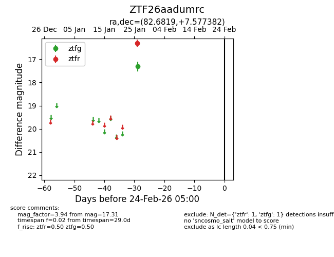
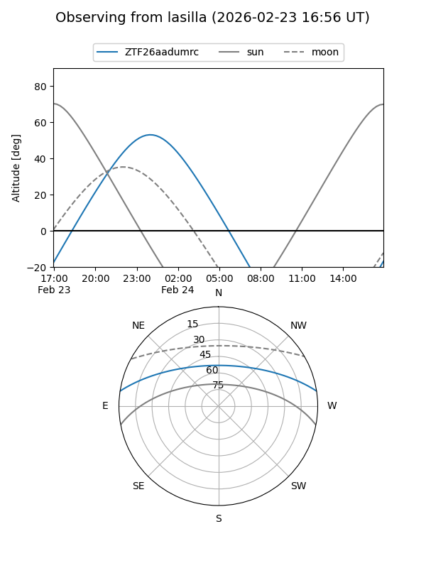
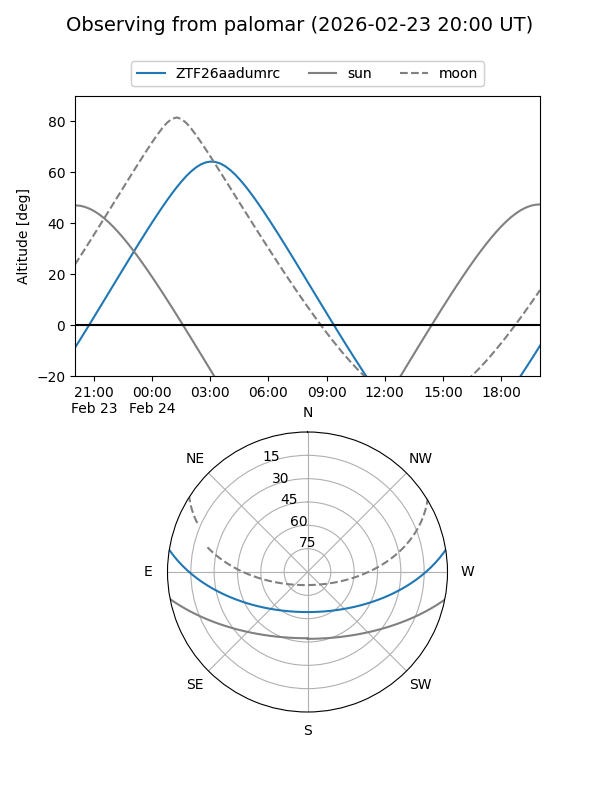

ZTF26aadumrc
Target ZTF26aadumrc at 2026-01-26 07:31
Aliases and brokers:
FINK: link
Lasair: link
ALeRCE: link
alt names
ZTF26aadumrc (ztf,fink_ztf)
Coordinates:
equatorial (ra, dec) = 82.6819,+7.57738
equatorial (HMS+DMS) = 05:30:43.67,+07:34:38.58
galactic (l, b) = (196.5644,-14.13307)
Flags:
Photometry:
last ztfg=17.31
1 ztfg detections
Lightcurve

Visibility


Additional plots